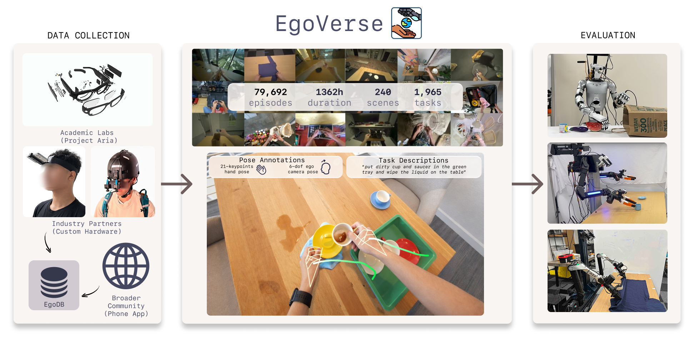

|
Xiongyi Cai I'm a second-year MS student at UC San Diego, working with Prof. Xiaolong Wang. Before this, I received my BS in Electrical and Computer Engineering at SJTU, where I worked with Prof. Weidi Xie. Email / X / Github / Google Scholar / LinkedIn |
{kind=link}
ResearchI'm interested in computer vision, and robotics. My research aims to develop methods for learning skills from human data, enabling robots to complete dexterous tasks in real-world environments. |
|  |
Ryan Punamiya*, Simar Kareer*, Zeyi Liu, Josh Citron, Ri-Zhao Qiu, Xiongyi Cai, Alexey Gavryushin, Jiaqi Chen, Davide Liconti, Lawrence Y. Zhu, Patcharapong Aphiwetsa, Baoyu Li, Aniketh Cheluva, Pranav Kuppili, Yangcen Liu, Dhruv Patel, Aidan Gao, Hye-Young Chung, Ryan Co, Renee Zbizika, Jeff Liu, Xiaomeng Xu, Haoyu Xiong, Geng Chen, Sebastiano Oliani, Chenyu Yang, Xi Wang, James Fort, Richard Newcombe, Josh Gao, Jason Chong, Garrett Matsuda, Aseem Doriwala, Marc Pollefeys, Robert Katzschmann, Xiaolong Wang, Shuran Song, Judy Hoffman, Danfei Xu RSS, 2026 project page / arXiv / code / This paper introduces EgoVerse, a large-scale egocentric human dataset and unified framework for scalable robot learning from egocentric human demonstrations. |
 |
Xiongyi Cai*, Ri-Zhao Qiu*, Geng Chen, Lai Wei, Isabella Liu, Tianshu Huang, Xuxin Cheng, Xiaolong Wang arXiv preprint, 2025 project page / arXiv / code / model / data This paper builds a large-scale egocentric human-humanoid manipulation dataset (PHSD) and uses it to pre-train and post-train a language-conditioned manipulation model, Human0. |
 |
Gorkay Aydemir, Xiongyi Cai, Weidi Xie, Fatma Guney ICLR, 2025 project page / arXiv / code This paper presents Track-On, a simple transformer-based model for online long-term point tracking. |
|
Borrowed from Jon Barron's source code. |